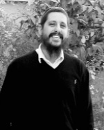

Chassidus Gave Me a New Appreciation for Gemara Study
The first time I walked into the yeshiva, a farbrengen had just ended and the hundreds of bachurim stood up and were singing “Shluchei Adoneinu” with gusto. I was very moved by this. I saw genuine joy on their faces, something deep that only someone from the outside can sense. I immediately felt that I wanted to be a part of this. I quickly felt at home.

From a young age I was interested in music, particularly in hard rock. I related deeply to it and it sort of made up for a feeling that something was missing in my life. I also loved soccer. I was a fan of Maccabee Tel Aviv and attended their games.
There is a problem within the Religious-Zionist world, which is why many leave, either to the side of added k’dusha or the opposite. On the one hand, their ideology is lofty and speaks of attachment of Torah and mitzvos; on the other hand, day to day behavior contradicts these ideals.
I finished elementary school with many questions, but since I didn’t know anyone suitable to speak to, I set my questions aside. I distracted myself with friends, soccer and basketball. Inside though, I felt that my many questions were being left unanswered, festering.
I went to a yeshiva high school in Netanya. In eleventh grade, before the matriculation exam in Gemara, the custom is for every boy to take a week off to go to any yeshiva in order to prepare for the test and to get acquainted with post-high school yeshivos.
I had a good friend, Amatzya Haramati, who told me about his brother Shai, who was learning in the Chabad yeshiva in Tzfas. He invited me to join him. “It’s different,” he promised. “It’s not another hesder or mechina yeshiva.”
At that time, there was a group of three bachurim, graduates of Religious-Zionist yeshivos, who were learning in Tzfas: Yoel Rosen, Yaniv Elihav, and Shai Haramati. This was my first encounter with Chabad. There in the yeshiva, I experienced the p’nimius of Chabad. The interesting thing is that even before I sat down to learn the fundamentals of Chassidus, I related to the messages of the Besuras Ha’Geula and “chai v’kayam.” I felt that these bachurim were speaking about something big, global, and revolutionary.
In Chabad, you see right away that they don’t just talk, but act with mesirus nefesh. On Fridays they go out on mivtzaim and during the week they give shiurim. Every encounter turns into a conversation about Torah and mitzvos. This is instilled into each bachur regardless of his own spiritual standing.
The first time I walked into the yeshiva, a farbrengen had just ended and the hundreds of bachurim stood up and were singing “Shluchei Adoneinu” with gusto. I was very moved by this. I saw genuine joy on their faces, something deep that only someone from the outside can sense. I immediately felt that I wanted to be a part of this. I quickly felt at home.
By the end of that week, I returned to yeshiva with many questions. What I had experienced had stirred my soul. I remember that I had a debate with a bachur on the topic of Moshiach. I finally said to him, “Listen, they are definitely not talking nonsense. These are not delusional bachurim; they are serious guys.”
I was very impressed by their approach: the Rebbe said, the Rebbe wrote, the Rebbe announced. I related to this point. You cannot speak this way unless there is a real power that stands behind it. I particularly related to the idea of prophecy. My parents, as well as the staff of the yeshiva high school I attended, did not understand what I was excited about. One of the rabbis tried cooling my ardor and explained that not all Lubavitchers thought this way, but I was already in another world.
One of the outstanding characteristics of young people is their unwillingness to cut corners and their desire to pursue truth till the end. This is why many drop out, because they don’t have Chassidus to support them. After that visit to the yeshiva in Tzfas, I would go there occasionally and each time I got more involved in things.
NEW CONCEPTS IN TANYA
When I finished high school, I went to the yeshiva in Tzfas for a few months, but apparently my journey had not reached its denouement and for various reasons I did not remain there.
When I looked for a hesder yeshiva where I could continue learning, I wanted one with a Chassidic orientation, which is how I got to the yeshiva in Paduel. Even then, the bachurim in the yeshiva in Tzfas continued to take an interest in me. One day, I had a phone conversation with the mashpia R’ Ofer Maidovnik whom I highly esteemed, as I do now. He had a big share in my coming close to Chabad. His concern for me moved me. In Paduel, I was known as the “Chassid Chabad,” even though I did not look like one. It was there that I went through my own internal process of connecting to Chabad. I bought a set of “Lessons in Tanya” and learned a chapter every day. It had an unprecedented effect on me. I felt that the Tanya had the power to affect change.
All those concepts of the “animal soul” and “G-dly soul” and that a Jew has the power to change and influence, and “a mitzva reveals G-dliness,” amazed me. When I reached chapter 36, I had the feeling of closure. There is a clear structure with two souls, birur and sparks, with the goal being to reveal Moshiach. Today there is a lot of talk about the need to create boundaries and Tanya sets clear boundaries and fills that with light. The Alter Rebbe organizes things, that which is good and bad, what the purpose of the world is, and how each person can attain it. Today, without Tanya, it is impossible to be a religious Jew with a true and inner connectedness.
I remember that while in Paduel, I learned the maamer in Likkutei Torah, “L’Havin Es Inyan Yeridas HaNeshama B’Guf.” I read the words and my jaw dropped. Chassidus has depth. There is no fear of dealing with the deepest issues, for the simple reason that only Chassidus has the power to deal with them. The Alter Rebbe makes every experience in the life of a Jew clear. He speaks about yeshus, about someone arrogant who can never have G-d in his life, something that other groups do not understand. On the contrary, Torah study leads many people to pride and it is very hard for them to work on middos and the fulfillment of mitzvos. In chapter four he explains that Torah is G-d’s wisdom and whoever learns it hugs the King and connects to the One who gave the Torah.
The Alter Rebbe created a revolution in the Jewish world; Torah needs to guide our daily conduct, for Torah is from the root meaning to instruct. In the past, it was obvious to me and many like me that during the time for t’filla, you pray; during the time for learning, you learn. But when you are outside the shul, it’s another story entirely. Chassidus teaches you to live in a Jewish way wherever you are.
Whoever went through this process knows that the hardest part is making the external switch. Even if deep inside you know this is the truth, the external change is extremely difficult. I constantly felt that the Rebbe was with me and knew what I was going through. I remember that towards the end of my army service, when I attended a farbrengen with R’ Ofer, he took me aside at the end of the farbrengen and gave me a warm hug. He said, “Tzvika, don’t forget that there’s a G-d.” That is what someone who learns Chassidus cares about.
When I finished my army service, I knew I was going back to the yeshiva in Tzfas. I remember feeling a battle being waged between my animal and G-dly souls. A bus passed by with a huge picture of the Rebbe on it. I looked at the Rebbe smiling at me and melted. I felt there could be no clearer sign than that. I began to cry and I sang “Yechi Adoneinu” from the depths of my heart. Of course, the next day I went to Tzfas and continued to learn there. In 5764 I went on K’vutza where I became a full-fledged Chassid, even in my appearance.
What was really surprising was that although I had gotten the lowest mark on the Gemara matriculation test – I simply didn’t like the subject or relate to it – after becoming a Chassid, I suddenly felt differently about Gemara. I loved it and did well in it.
YOU CAN’T GIVE UP ON ANY CHILD
Today, I am married and I serve as a shliach in Hertzliya and run youth activities. Chassidus and Tanya give me the tools for my job as well as for my other work as a psychotherapist. Thanks to Chassidus, I have the ability to give a child with emotional difficulties a real chance, so I don’t give up on him. This is something you can get from Tanya, which establishes that every Jew is a part of G-d above. Giving up on him is giving up on Elokus!
In Chassidus there is a lot of belief in the power of a Jew to work wonders and to find the power within to affect change. In Chassidus there are opposites – endless demands along with an astonishing understanding of man’s weaknesses, and incredible sensitivity as well as faith in a Jew’s capabilities. These opposites can work in tandem only through learning Chassidus.
Beis Moshiach (staff). "Chassidus Gave Me a New Appreciation for Gemara Study." Beis Moshiach, no. 868 (February 7, 2013).